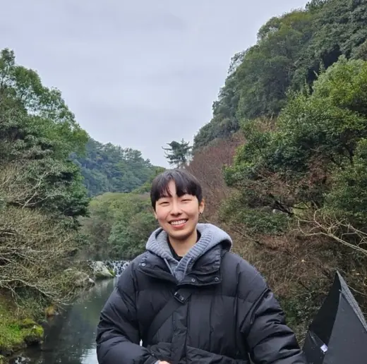
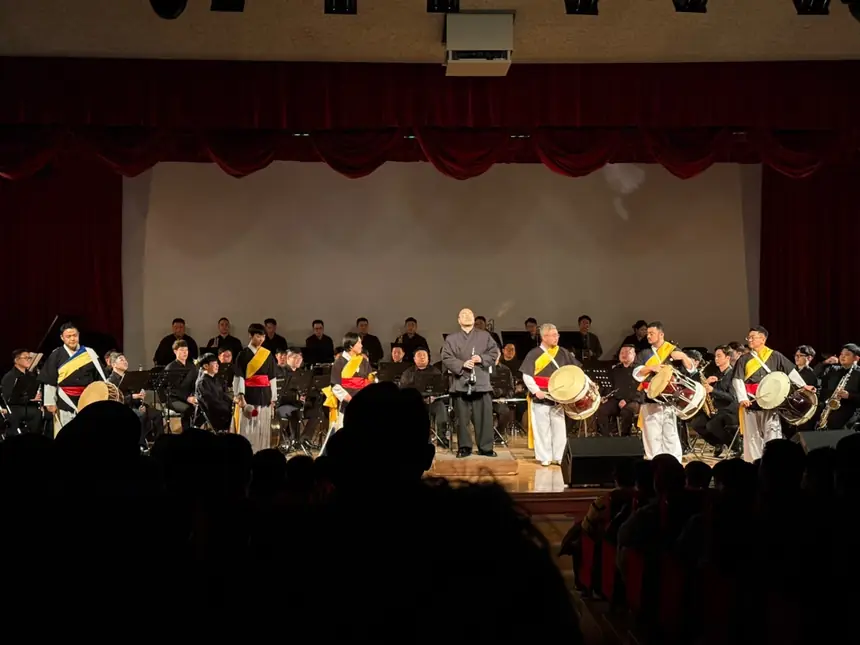

Teaching
Explore proposed AP Biology and Chemistry curriculum studies alongside a documented classroom assessment inquiry. Each examines what students' explanations and evidence can support.
Inside my classroom →Science teaching, research, and things I make
Hello, I'm Ye Eun. I teach biology and chemistry in South Korea, and I enjoy making things that help students work through science.
Some of those things begin with a question in class and become a longer project. I keep this site to share the work itself, notes about the decisions behind it, and a little of life beyond school.

A student may have a question they care about before they know what evidence could answer it. That gap can be difficult to notice once a research paper is taking shape. I built Research Methods Studio to help students examine their questions, methods, data, and developing claims together, and return to earlier decisions when a study changes.
I've also built The Story Method, an AP Biology learning environment with story-based journeys, recall prompts, and application activities.
Explore proposed AP Biology and Chemistry curriculum studies alongside a documented classroom assessment inquiry. Each examines what students' explanations and evidence can support.
Inside my classroom →I'm interested in justice-oriented science education, especially how scientific questions, curriculum decisions, and classroom relationships can open or restrict participation.
Explore my research interests →I play pungmul with a queer ensemble and spend time with fiction, poetry, and mystery shows. I've collected a few photographs and favourite stories on a separate page.
Photographs, books, and other favourites →